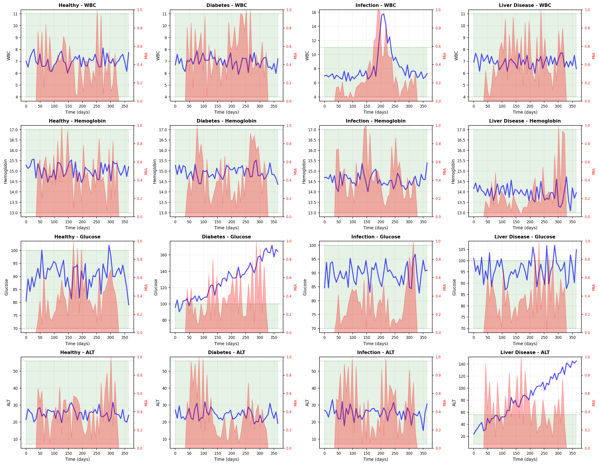
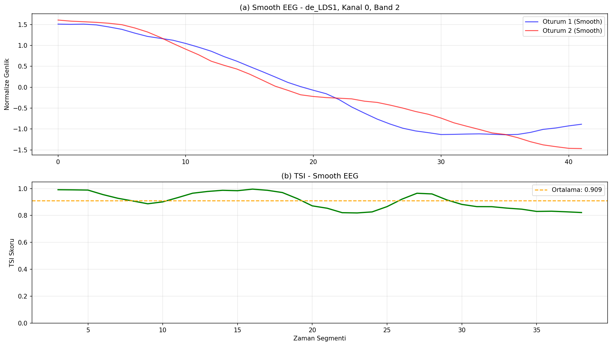

Biyomedikal Sinyal Analizi (EEG)
Klinik ortamlarda elde edilen veriler (EEG, EKG) genellikle gürültülüdür ve hastadan hastaya farklılık gösterir. TSI, sinyalin genliğine takılmadan doğrudan "yapısal örüntüye" odaklandığı için, tıbbi teşhislerde devrim niteliğinde bir sağlamlık sunar.
SEED-IV Veri Seti Üzerinde Doğrulama
[cite_start]Algoritmamız, duygu tanıma üzerine kurulu SEED-IV EEG veri seti üzerinde zorlu bir teste tabi tutulmuştur[cite: 496]. Sinyaller iki farklı senaryoda analiz edilmiştir: 1. Pürüzsüzleştirilmiş ve ön işlemden geçmiş veriler. 2. [cite_start]Tamamen ham, gürültülü voltaj sinyalleri[cite: 501].
Temel Bulgu: Ön İşlemeden Bağımsız Güç
[cite_start]Klasik algoritmalar ham veride çökerken, TSI algoritması ham EEG sinyallerinde sadece %3.8'lik bir performans düşüşü sergilemiştir (TSI Skoru: Pürüzsüz 0.909, Ham 0.871)[cite: 505, 507].
Bu sonuç, algoritmamızın klinik cihazlardaki sinyal kalitesinden bağımsız olarak krizleri (örneğin epilepsi nöbeti başlangıcı veya anomali tespiti) güvenilir bir şekilde yakalayabildiğini kanıtlamaktadır.
Biyomedikal Sinyal ve Sağlık Verisi Analizi
TSI, klinik verilerde hastadan hastaya değişen kalibrasyon sorunlarını aşarak, doğrudan yapısal örüntüye odaklanır.
1. Uzun Vadeli Hastalık Progresyonu (Kan Testleri)
TSI algoritması, hastaların uzun vadeli kan değerlerindeki (WBC, Glukoz, ALT) bozulmaları, referans aralıklarına bağımlı kalmadan "Trend Stresi" (MIA) olarak algılar.

Şekil: Sağlıklı bireylere kıyasla; Enfeksiyon (WBC), Diyabet (Glukoz) ve Karaciğer Hastalığı (ALT) gelişimi sürecinde TSI'ın kırmızı ile gösterilen MIA (Hastalık Stresi) alanında yarattığı dramatik yükselişler.2. Nörolojik Örüntüler (EEG Veri Seti)
Algoritmamız, klinik cihazlardaki sinyal kalitesinden bağımsız olarak çalışır.

Şekil: SEED-IV veri setinden alınan EEG sinyalleri üzerinde TSI'ın ortalama 0.909'luk yüksek yapısal eşleşme skoru sergilemesi.